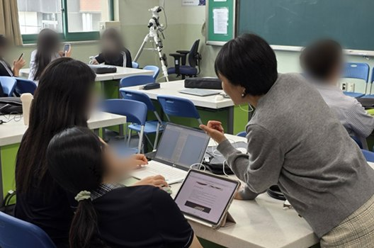
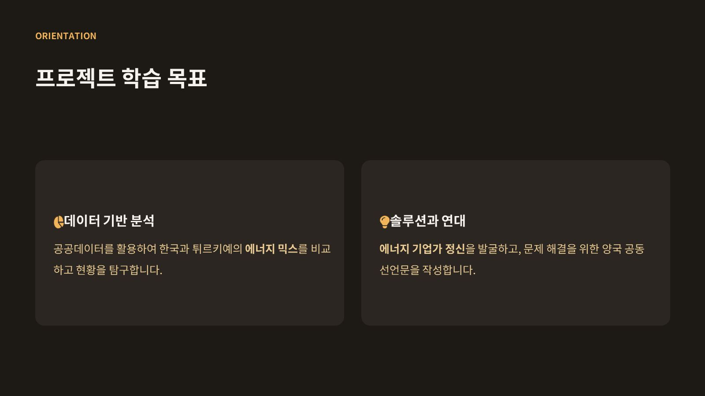
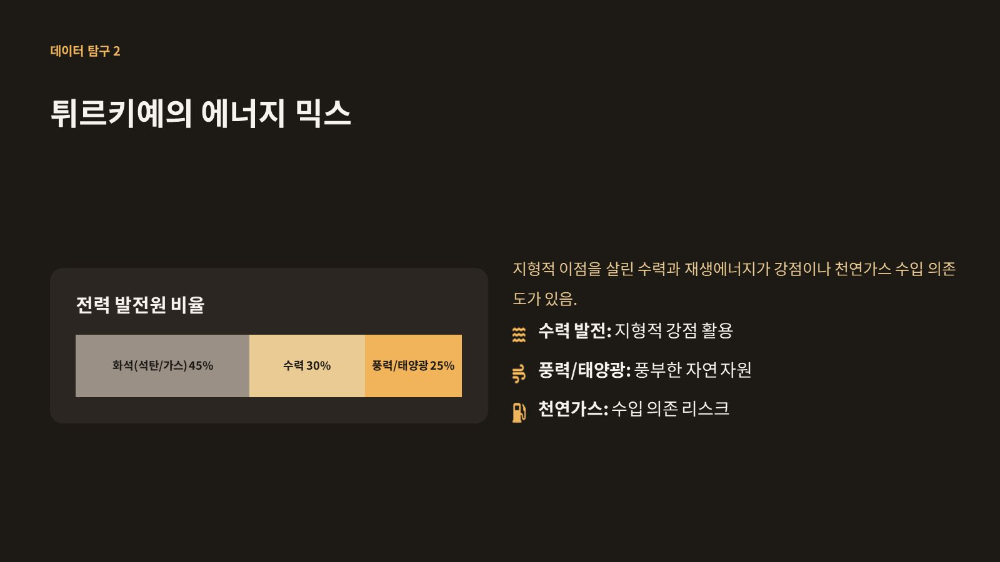
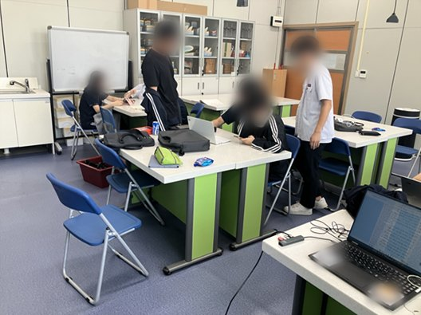
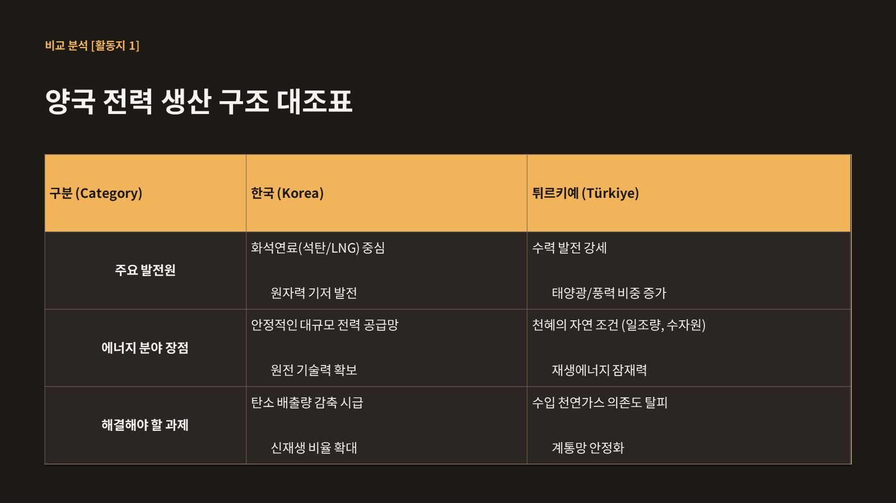

두 나라의 전기는
어디에서 올까?
오늘의 목표한-튀르키예 전력 데이터를 기준 연도·지표와 함께 비교하고, 두 나라 에너지 전환의 기회와 위기를 찾아요.

수업 흐름
← → 키나 아래 버튼으로 넘겨요. 교사 모드를 켜면 발문·유의점이 보여요.
찬란한 두 도시의 밤,
우리는 어떤 에너지를 쓸까?

두 나라의 에너지 출처
(에너지 믹스)는 어떻게 다를까?
오늘의 목표: 한-튀르키예 전력 데이터를 기준 연도·지표와 함께 비교해요. 다음 시간에는 공동 선언문을 함께 써요.

데이터 탐구 1 · 한국의 전력 (2024년 발전량)
원자력이 가장 많고, 가스와 석탄이 비슷하게 뒤를 잇고 있어요.
출처: 산업통상자원부 「2024년 에너지수급동향」(2025. 5.) · 총 발전량 595.6TWh
데이터 탐구 2 · 튀르키예의 전력 (2024년 발전량)
원자력은 아직 0%예요(첫 원전 아쿠유 1호기 시운전 중).
출처: Ember 「Türkiye Electricity Review 2025」·연간 전력 데이터 · 총 발전량 341.2TWh
두 나라 도넛으로 겹쳐 비교하기 →수업 PPT의 튀르키예 숫자 45 · 30 · 25,
무엇을 센 걸까요?
발전소를 지어 둔 크기(설비용량, GW)와 1년 동안 실제로 만든 전기(발전량, TWh)는 비율이 달라요. 아래 버튼을 바꿔 가며 비교해 봅시다.

① PPT의 튀르키예 45 · 30 · 25는 어느 쪽과 닮았나요?
② 원자력·석탄은 설비 비중보다 발전 비중이 커요. 왜일까요?
| 발전원 | 설비 비중 | 발전 비중 | 발전 ÷ 설비 |
|---|---|---|---|
| 한국 원자력 | 17.0% | 31.7% | 약 1.9 |
| 튀르키예 석탄 | 18.9% | 35.6% | 약 1.9 |
| 한국 신재생 | 22.7% | 10.6% | 약 0.47 |
| 튀르키예 태양광 | 16.7% | 7.5% | 약 0.45 |
③ 계산해 봅시다 · 1GW 발전소는 1년에 전기를 얼마나 만들까요?
원자력(이용률 약 85%): 1GW × 8,760h × 0.85 ≈ 7.4TWh
태양광(이용률 약 15%): 1GW × 8,760h × 0.15 ≈ 1.3TWh → 약 5.7배 차이!
이용률 85%·15%는 계산을 위한 어림값이에요(교육용 단순화). 실제 값은 해마다·지역마다 달라요.
④ 데이터를 읽을 때 꼭 확인할 세 가지는?
PPT 원래 수치는 설비용량에 가까움(튀르키예 2024년 11월 말 설비: 수력 28·가스 21.4·석탄 18.9·태양광 16.7·풍력 10.8%). 핵심 정리: “설비 비중 ≠ 발전 비중. 원자력·석탄은 이용률이 높고, 태양광·풍력은 낮다.”
예상 오개념 — “설비가 많으면 전기도 그만큼 많이 만든다”, “재생에너지 설비가 22%면 전기의 22%가 재생에너지다”. 정리 발문: “태양광을 늘리는 것만큼, 언제 만든 전기를 언제 쓰게 할지(저장·계통)도 중요하겠지?”(→ PPT의 튀르키예 과제 ‘계통망 안정화’와 연결)
수치 출처 — 한국 설비용량(2024년 말, 총 153.1GW): 가스 30.3·석탄 26.3·신재생 22.7·원자력 17.0%, 기타 3.7%는 100%에서 뺀 값 — 산업통상자원부 「2024년 에너지수급동향」(2025. 5.). 튀르키예 설비용량(2024년 11월 말, 약 115GW): 유럽환경청(EEA) 「Europe’s environment 2025」 튀르키예 국가 페이지(원자료 미표기 — 수업 전 튀르키예 에너지천연자원부·TEİAŞ 자료로 대조 권장).
먼저 끝난 모둠 — 한국 2024년 신재생 63.2TWh를 설비 34.7GW로 나눠 이용률 어림하기(63.2 ÷ (34.7 × 8.76) ≈ 21%).
직접 찾아봅시다: 공공데이터
Ember·IEA에서 발전원별 발전량을, 빅카인즈에서 두 나라 에너지 기사를 찾아 활동지 1에 적어요. 지표(발전량)·기준 연도·출처 세 가지를 꼭!
Ember 튀르키예IEA 데이터 브라우저빅카인즈PadletDeepL3개 언어 용어 카드 (한국어 · English · Türkçe)
| 한국어 | English | Türkçe |
|---|---|---|
| 석탄 | Coal | Kömür |
| 천연가스 | Natural gas | Doğal gaz |
| 원자력 | Nuclear power | Nükleer enerji |
| 수력 | Hydropower | Hidroelektrik |
| 풍력 / 태양광 | Wind / Solar | Rüzgâr / Güneş enerjisi |
| 지열 | Geothermal | Jeotermal |
| 재생에너지 | Renewable energy | Yenilenebilir enerji |
| 발전량 / 설비용량 | Generation / Installed capacity | Üretim / Kurulu güç |
| 기후 행동 | Climate action | İklim eylemi |

각 나라의 기회와 과제는 무엇일까요?
한국 · 위기를 기회로
장점: 안정적인 대규모 전력 공급망, 원전 기술력.
과제: 화석연료 56% → 탄소 감축 시급, 신재생 비율 확대, 석탄·가스 수입 의존.
튀르키예 · 자원을 혁신으로
장점: 수자원·바람·햇빛·지열, 재생에너지 46%.
과제: 천연가스·석탄 수입 의존(에너지안보), 날씨에 따라 출렁이는 수력·풍력·태양광의 계통 안정화.
PPT의 분석 더 보기

1차시 끝!
활동지 1을 저장하고, 조사한 수치(지표·연도·출처)를 Padlet에 올려 두세요. 다음 시간에는 이 데이터로 에너지 기업가 정신을 찾아요.
2차시 수업 화면으로 →활동지
활동 1 · 공공데이터로 보는 두 나라 에너지 믹스
쓴 내용은 이 기기의 브라우저에만 저장돼요. 수업이 끝나면 아래 「내 기록 모두 복사」로 모둠 문서에 붙여 두세요.
1두 나라의 발전원별 비중
Ember·IEA 통계(발전원별 발전량)와 국가 전력 통계로 두 나라의 전력 생산 비율을 비교해요.
2설비용량 vs 발전량
미니 활동 「숫자 탐정」에서 찾은 답을 적어요.
3에너지 전환의 기회와 위기 요인
나라마다 기회와 위기를 하나 이상 쓰고, 근거 수치나 기사를 붙여요.
이 차시 슬라이드
1차시 슬라이드 · 1~9장
이 차시 평가
데이터 근거로 비교했나요?
[10통과2-02-06] [10통과2-03-02] [12기지04-01] · 관찰 평가, 활동지 1
| 기준 | A | B | C |
|---|---|---|---|
| 데이터 기반 에너지 믹스 탐구 10통과2-03-02 | 공공데이터(Ember·IEA 등)에서 두 나라의 발전원별 비중을 찾아 지표(발전량)·기준 연도·출처를 모두 적고, 화석·원자력·재생에너지 비중 차이를 수치로 비교한다. | 두 나라 수치를 적었지만 지표·기준 연도·출처 가운데 하나 이상이 빠졌거나, 비교 문장에 수치(%p·배)가 없다. | 한 나라 수치만 적었거나, 출처 없이 수업 화면의 값을 그대로 옮겼다. |
| 설비용량과 발전량 구분 10통과2-02-06 | 수업 PPT 수치가 설비용량에 가깝다는 것을 찾아내고, 원자력·석탄과 태양광의 ‘발전 ÷ 설비’ 차이를 이용률(가동 시간)로 설명한다. | 어느 쪽(설비/발전)과 닮았는지는 맞혔지만, 두 값이 다른 이유를 쓰지 못했다. | 설비용량과 발전량을 같은 것으로 보고 비교했다. |
| 에너지 전환 기회와 위기 도출 12기지04-01 | 나라마다 기회와 위기를 1개 이상씩 쓰고, 각각에 근거 수치나 기사 1건을 붙인다(예: 가스 수입 의존 → 에너지안보). | 기회·위기를 썼지만 근거 수치·기사가 붙은 항목이 하나뿐이다. | 기회나 위기 가운데 한쪽만 썼거나, 근거가 하나도 없다. |
A·B·C는 이 과제의 채점 수준이에요. 학기 성취도(A~E)는 학교 성취평가 기준에 따라 따로 산출해요.
나가기 질문
데이터를 읽을 때 꼭 확인할 세 가지는 무엇인가요? 오늘 내가 찾은 수치에 세 가지가 모두 적혀 있나요?